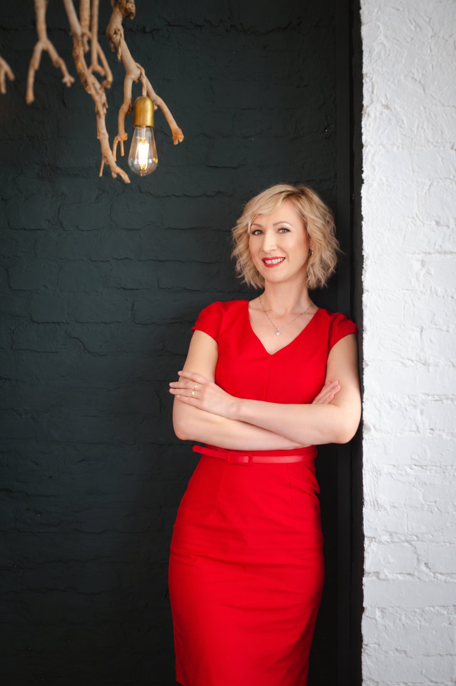

Átlátom az összefüggéseket, közös nevezőre hozom az üzleti és technikai szereplőket, és átlátható működéssé formálom az ötleteket. Naprakész digitális tudással és pénzügyi szemlélettel segítek megtalálni, majd megvalósítani a vállalkozásodhoz illő megoldásokat.
Szombathely · személyesen és online · magyar és angol nyelven

Új nézőpontból nézem.
Egységes rendszerben látom.
Ötletből rendszer.
Együttműködésből megvalósítás.
Akkor tudok igazán értéket teremteni, amikor sok a nyitott kérdés, több szakterület dolgozik együtt, és a továbblépéshez világos feladatokra, felelősségekre és megalapozott döntésekre van szükség.
Saját vállalkozásom vezetéséből is tudom, mennyire fontos, hogy a tervek a rendelkezésre álló idővel és erőforrásokkal is megvalósíthatók legyenek.
Bővebben rólamProjektmenedzsment-, pénzügyi és kontrollingtapasztalatomat BI- és informatikai projektekben szerzett tudással kapcsolom össze.
Tudatosan olyan képzéseket választok, amelyek az aktuális megbízásaimhoz kapcsolódnak — hogy naprakész tudással és korszerű módszerekkel dolgozhassak.